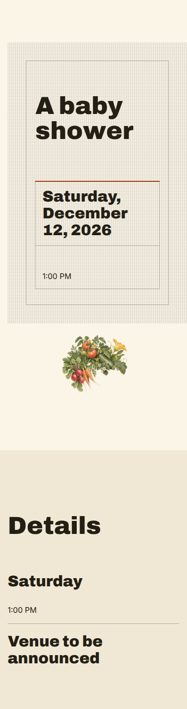
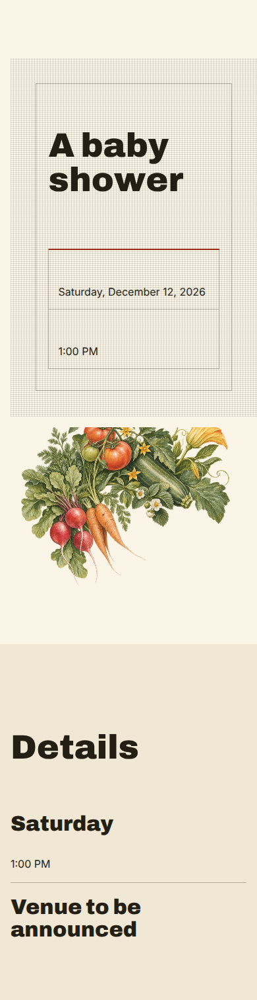
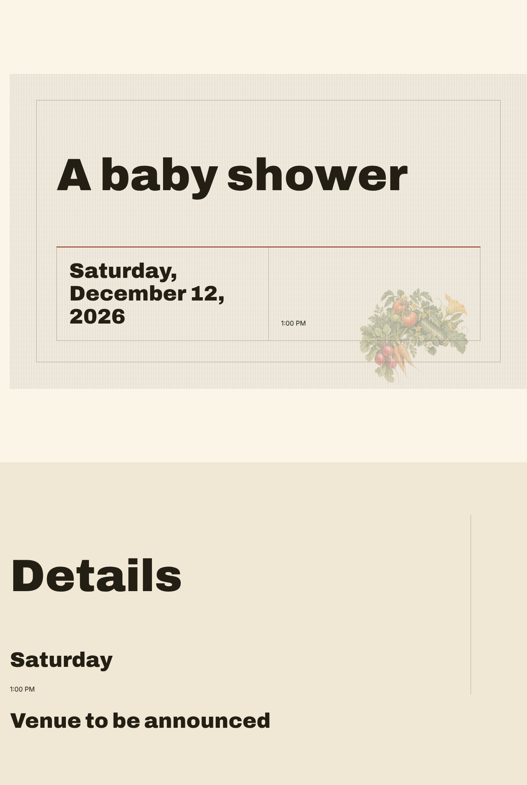
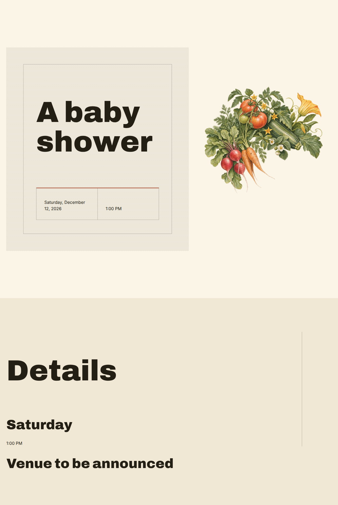

Premise: Tended Welcome. Same concept, same content, same DesignIntent, same palette, same typography, and the same image bytes as the capability spike. The artwork treatment system is the only variable.
5287be.| treatment resolved | contained |
|---|---|
| side of the section it takes | end |
| protection | none (scrim: none) |
| fit | contain |
| reservation shape 1280 / 390 | square / landscape |
| baseline geometry 390 / 1280 | 390x1474 / 1280x1907 |
| improved geometry 390 | page 390x1512; artwork box 374x240; fit cover; scrim none |
| improved geometry 1280 | page 1280x1913; artwork box 528x873; fit contain; scrim none |
| text ends / artwork starts at 1280 | 602px / 752px |
| geometry unchanged when the asset is removed | 390 true, 1280 true |
| verified clean 390 / 1280 | true / true |




These are questions for you, deliberately unanswered here and not put to any model.
{
"version": "visual_art_intent_v2",
"role": "object",
"subject": "A single object or small still life, isolated with nothing behind it, drawn from registration marks, proofs pinned in rows, the grain of the paper. The direction it serves: An open evening at a shared printmaking studio, where the work pinned on the walls and the presses themselves are the whole invitation.",
"medium": "Original illustration. pressed paper, with ink that sits on the surface rather than soaking in",
"composition": "The artwork sits whole in a space of its own beside the event's words. It takes the trailing side; the words take the other. On a wide screen it is composed into a roughly square frame; on a phone the same artwork becomes a wide frame. No text is set over it, so the whole frame is the artwork's. It is shown entire and never cropped, so the frame can be composed edge to edge.",
"subjectWeight": "balanced",
"negativeSpace": "none",
"background": "transparent",
"cropSafety": "tight",
"paletteRelationship": "harmonize",
"paletteHexes": [
"#FBF5E8",
"#F0E7D4",
"#251E10",
"#FFD7CC",
"#982F12",
"#241F14"
],
"hostConstraints": [
"Do not describe the evening as a sale; nothing is for sale"
],
"prohibited": [
"No logos, trademarks, brand marks or wordmarks.",
"No proprietary characters, licensed figures or campaign artwork.",
"No copying of a named artist's or studio's work; translate influence, never reproduce it.",
"No photography or photorealistic likeness of real people.",
"No text, lettering, numerals or captions anywhere in the image."
]
}